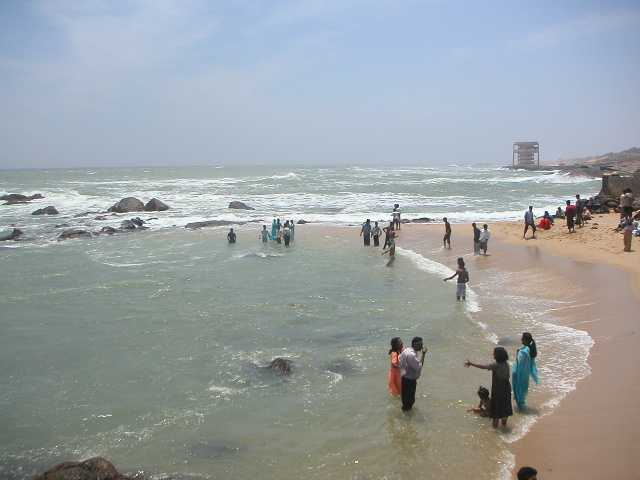

MAIN ATTRACTIONS
Perunthenaruvi waterfall
A hilly province of pristine splendour, the district of Pathanamthitta is hailed as the headquarters of pilgrim worship in Kerala. Three rivers course through its prosperous terrains comprising natural divisions of the lowlands, the midlands and the highlands. Interspersed with temples, rivers, mountain ranges and coconut groves


Gavi
Gavi is situated some 14 km away from the famed Periyar Tiger Reserve and is heaven on Earth, quite literally
Thriveni sangamam
As the name suggests this place is famous for the meeting point of the three rivers. It serves as the halting point for those on their way to Sabarimala.


Kaviyoor rock temple
If you are looking forward to explore the fascinating culture of Kerala, you are at right place. Kaviyoor Rock Temple is the only cave temple left in the state which glorifies the culture of the area more that its spiritual aspect.
Aranmula
Aranmula is a place mainly known for its expert craftsmanship and snake boat race organized on the final day of Onam Festival. The most renowned art of metal mirror of Aranmula Kannadi has its roots originated from this place.